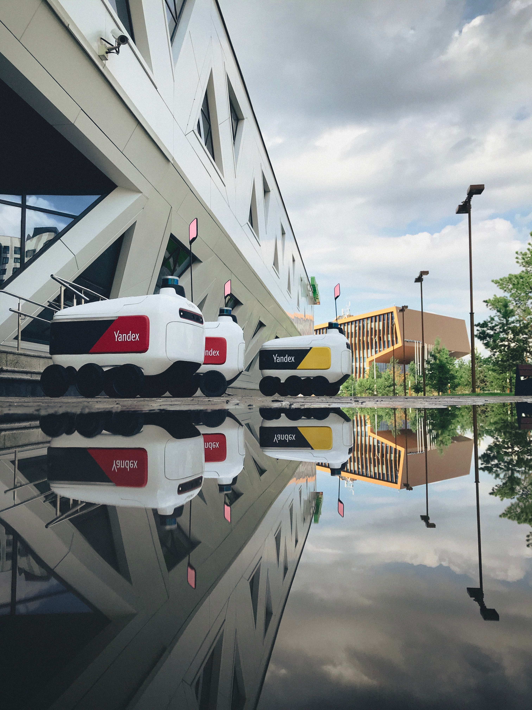

Технологии Яндекса охватывают различные аспекты повседневной жизни и предоставляют широкий спектр услуг и продуктов. Ниже приведены несколько областей, в которых вы можете использовать технологии Яндекса, использующие ИИ:
Поисковый движок:
Используйте поисковик Яндекса для быстрого поиска информации в интернете при помощи Персонального помощника «Алисы» — нейросети, позволяющей быстро обработать вашу речь алгоритмами и найти нужную информацию в секунды.
Яндекс.Карты:

Ориентируйтесь в городе, планируйте маршруты и узнавайте о дорожной обстановке с помощью Яндекс.Карт.
Яндекс.Метро:
Получайте информацию о метро в различных городах, планируйте маршруты в общественном транспорте.
Яндекс.Палех:
В ноябре 2016 года Яндекс представил поисковый алгоритм «Палех», который ищет подходящие веб-страницы не по ключевым словам, а по смыслу. Алгоритм основан на нейронных сетях и предназначен для поиска ответов на редкие и уникальные запросы
Яндекс.Браузер:
Яндекс Браузер один из первых браузеров, получивший поддержку нейросети для более удобного сёрфинга в Интернете. Данный браузер имеет все функции помощника «Алиса»
«Yandex.Rover» — универсальный аппарат, способный доставить какой-либо предмет в рамках его габарита по всему городу. Задействован и пущен в работу по городу Иннополис, Республика Татарстан, Россия. Ежедневно «Yandex.Rover» доставляет гражданам продукты из заведений, вещи, заказанные в пункты выдачи. Робот полностью автономен: сам планирует свой маршрут, оценивает ситуацию вокруг и объезжает препятствия.